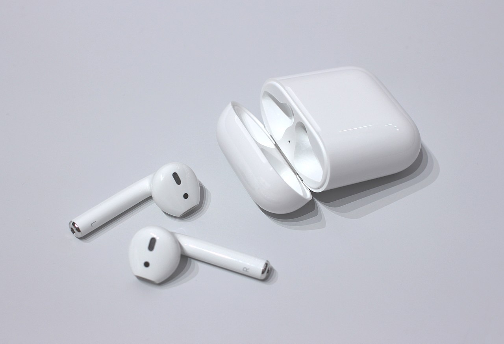

Macintosh [ˈmækɪntɒʃ] или Mac [mæk] — линейка персональных компьютеров производства корпорации Apple. Работают под управлением операционных систем семейства Mac OS, семейства Windows NT, A/UX, NeXTSTEP, BeOS/Haiku GNU/Linux и Rhapsody. Своё название получили от сорта яблок «Malus 'McIntosh'».

Mac mini — компьютер, выпускаемый Apple Inc. и относящийся к семейству Macintosh. Официально был представлен публике 11 января 2005 на MacWorld Expo. С тех пор модельный ряд обновлялся в 2005, 2006, 2007, 2009, 2010, 2011, 2012, 2014, и 2018-ых годах. Последнее обновление произошло в 2020 году - Mac Mini перешёл на архитектуру ARM и фирменный чип Apple M1. Имеет относительно малые для устройств данного уровня размеры: квадратное со скругленными краями основание со стороной 16,5 см и 5,1-сантиметровую высоту (модели до 2009 года включительно), что практически идентично пяти сложенным одной стопкой коробкам от компакт-дисков. Масса — 1,32 кг. Модель 2010 года имеет размеры 19,7x19,7x3,6 см. Масса 1,37 кг.
Apple MacBook Pro — ноутбук корпорации Apple. Позиционируется в линейке Apple как ноутбук для профессиональной деятельности (по общей классификации является современным мейнстримным бизнес-ноутбуком[1][2][3][4] с выраженными мультимедийными чертами; не имеет армированных\защищённых версий и до 2016 года не комплектовался высокоуровневой профессиональной графикой и модулями NFC). MacBook Pro пришёл на смену компьютерам Apple Powerbook G4 в 2006 году. Модель в 13" корпусе производилась непрерывно с 2009 года, 15" — с начала линейки в 2006 году, 16" — с 2019 года, 17" — с начала линейки и до 2012 года. На конец 2019 года линейка представлена ноутбуками с диагональю экрана только 13 и 16 дюймов. В 2012 году была объявлена первая серия с дисплеем Retina, корпуса которой остаются практически неизменными с 2008 года — с этого поколения разрешение дисплея увеличилось в 4 раза и остаётся неизменным по состоянию на конец 2018 года. Именно тогда 17-дюймовая модель была исключена из линейки.
Mac Pro — серия профессиональных рабочих станций, производимых корпорацией Apple с 2006 года. Они пришли на смену компьютерам PowerMac G5. По сравнению с линейкой PowerMac G5, основанной на архитектуре PowerPC, компьютеры Mac Pro используют процессоры Intel.Первый Mac Pro был основан на двух двухъядерных процессорах Intel Dual-core Xeon Woodcrest и официально анонсирован 7 августа 2006 года на всемирной конференции разработчиков проводимой компанией Apple (WWDC). Новый Intel Xeon-based Xserve был анонсирован вместе с Mac Pro, завершив миграцию Apple от PowerPC к архитектуре x86. 4 апреля 2007 года была анонсирована модель с двумя четырёхъядерными процессорами Quad-core Xeon Clovertown. Следующая модель была представлена 8 января 2008 года на основе двух четырёхъядерных процессоров Quad-core Xeon Harpertown.
iPhone (МФА: [ˈaɪfoʊn]; «Айфо́н»[прим. 2]) — серия смартфонов, разработанных корпорацией Apple. Работают под управлением операционной системы iOS, представляющей собой упрощённую и оптимизированную для функционирования на мобильном устройстве версию macOS. Впервые iPhone был анонсирован Стивом Джобсом на конференции Macworld Expo 9 января 2007 года. Название iPhone образовано от англ. phone (телефон) добавлением буквы i; на презентации Джобс заявил, что это сокращение слова Internet (Интернет), а также сказал, что «эта буква означает для нас и другие вещи» и показал слайд со словами individual, instruct, inform, inspire («личный; обучать; сообщать; вдохновлять»)[8]. В продажу аппарат поступил 29 июня 2007 года вместе с iPhone OS и быстро завоевал существенную часть рынка смартфонов в США. Популярность iPhone OS поддержал вышедший в продажу в сентябре того же года iPod touch, обладавший, однако, заметно урезанной функциональностью по сравнению с iPhone.

AirPods — беспроводные Bluetooth наушники от корпорации Apple. Представляют собой два раздельных наушника, использующих жесты для взаимодействия с пользователем: вынимание наушника из уха приостанавливает воспроизведения (функция «пауза»); возврат его на место — продолжет воспроизведение; двойное касание запускает голосового ассистента Siri, либо управляет воспроизведением музыки.[1] Наушники AirPods совместимы с устройствами Apple на iOS 10 или новее, а также с ПК и ноутбуками на базе macOS Sierra и часами на базе watchOS. Наушники воспроизводят звук с любого устройства, совместимого со стандартом Bluetooth 4.0. На устройствах с ОС Android доступен жест «двойное касание» для управления.[2]
MagSafe — разъём питания для ноутбуков компании Apple. Впервые был представлен в сочетании с MacBook Pro на выставке Macworld Expo в Сан-Франциско 10 января 2006 года компанией Apple. Разъём MagSafe удерживается на месте магнитами, поэтому, если кто-то случайно заденет шнур, он просто и безопасно для ноутбука отсоединится. С 2020 года под названием MagSafe выпускается серия аксессуаров с магнитными вставками для линейки iPhone 12.

iPod (МФА: [ˈaɪˌpɔd], от англ. pod — капсула, отделяемый отсек) — торговая марка серии портативных медиапроигрывателей компании Apple, в качестве носителя данных использующих флеш-память или, в ряде моделей, жёсткий диск (самый известный — iPod classic). Дебют бренда состоялся 23 октября 2001 года. На пресс-конференции «The Beat Goes On», прошедшей 5 сентября 2007 года в Сан-Франциско, Стив Джобс сообщил, что на тот момент было продано 110 млн плееров iPod[1]. Вместе с выходом концепции нового плеера Стив Джобс придумал слоган для него: «1000 songs in your pocket» (1000 песен у Вас в кармане). Поэтому ему не хотелось связывать название плеера с музыкой или песнями. В то же время на своих первых презентациях он часто использовал образ компьютера, как некоторого порта, к которому подключаются разные устройства. В это время один из фрилансеров-копирайтеров Винни Чико (Vinnie Chieco) представлял себе такой порт в виде космического корабля, а когда он увидел первый прототип плеера, он вспомнил о словах из фильма «Космическая одиссея 2001 года»: «Open the pod bay doors!» (Открыть двери в капсулы!). Капсула (англ. pod) как раз и может покидать корабль, но должна возвращаться на него. Таким образом добавив букву «i», которая уже была использована в iMac, Винни Чико получил название iPod[2].
iPod Classic (продаётся как «iPod classic», раньше был известен под именем iPod) — портативный медиа плеер, созданный Apple, Inc. К сегодняшнему дню появилось шесть поколений iPod Classic, а также один спин-офф (iPod Photo) который постепенно воссоединился с линией Classic. Все поколения используют 1,8 дюймовый экран. Текущее поколение на сегодняшний день является самым ёмким iPod, с 160 ГБ дискового пространства. Ретроним «Classic» появился вместе с шестым поколением iPod Classic 5-го сентября 2007; до этого, iPod Classic назывался просто iPod.
Перейти к меню